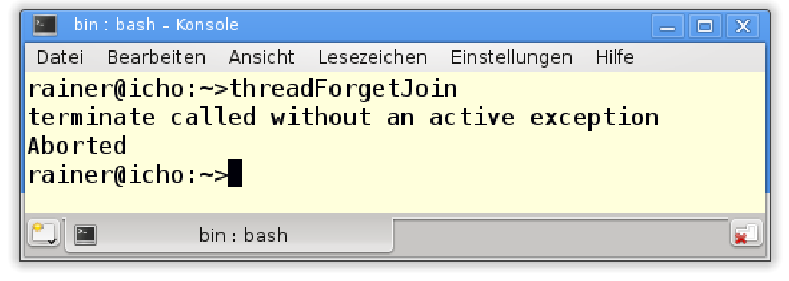
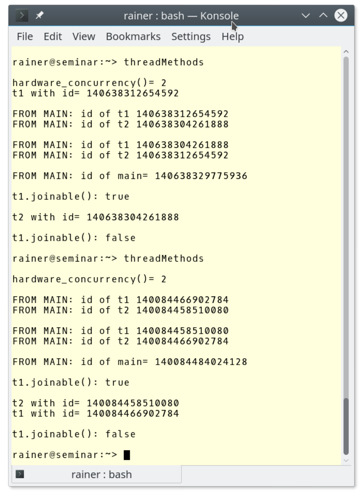

#线程
要用C++标准库启动一个线程，就必须包含<thread>头文件。
创建线程
线程std::thread对象表示一个可执行单元。当工作包是可调用单元时，工作包可以立即启动。线程对象是不可复制构造或复制赋值的，但可移动构造或移动赋值。
可调用单元是行为类似于函数。当然，它可以是一个函数，也可以是一个函数对象，或者一个Lambda表达式。通常忽略可调用单元的返回值。
介绍完理论知识之后，我们来动手写个小例子。
// createThread.cpp
#include <iostream>
#include <thread>
void helloFunction() {
std::cout << "Hello from a function." << std::endl;
}
class HelloFUncitonObject {
public:
void operator()()const {
std::cout << "Hello from a function object." << std::endl;
}
};
int main() {
std::cout << std::endl;
std::thread t1(helloFunction);
HelloFUncitonObject helloFunctionObject;
std::thread t2(helloFunctionObject);
std::thread t3([] {std::cout << "Hello from a lambda." << std::endl; });
t1.join();
t2.join();
t3.join();
std::cout << std::endl;
}
三个线程(t1、t2和t3)都会将信息写入控制台。线程t2的工作包是一个函数对象(第10 - 15行)，线程t3的工作包是一个Lambda函数(第26行)。第28 - 30行，主线程在等待子线程完成工作。
看一下输出。

三个线程以任意顺序执行，这三个输出操作也可以交错。
线程的创建者(例子中是主线程)负责管理线程的生命周期，所以让我们来了解一下线程的生命周期。
##线程的生命周期
父母需要照顾自己的孩子，这个简单的原则对线程的生命周期非常重要。下面的程序(子线程最后没有汇入)，用来显示线程ID。
#include <iostream>
#include <thread>
int main() {
std::thread t([] {std::cout << std::this_thread::get_id() << std::endl; });
}
程序出现了错误，不过依旧打印了线程的ID。

那是什么原因引起的异常呢？
汇入和分离
线程t的生命周期终止于可调用单元执行结束，而创建者有两个选择：
- 等待线程完成:
t.join() - 与创建线程解除关系:
t.detach()
当后续代码依赖于线程中调用单元的计算结果时，需要使用t.join()。t.detach()允许线程与创建线程分离执行，所以分离线程的生命周期与可执行文件的运行周期相关。通常，服务器上长时间运行的后台服务，会使用分离线程。
如果t.join()和t.detach()都没有执行，那么线程t是可汇入的。可汇入线程的析构函数会抛出std::terminate异常，这也就是threadWithoutJoin.cpp程序产生异常的原因。如果在线程上多次调用t.join()或t.detach()，则会产生std::system_error异常。
解决问题的方法很简单：使用t.join()。
#include <iostream>
#include <thread>
int main() {
std::thread t([] {std::cout << std::this_thread::get_id() << std::endl; });
t.join();
}
现在就能得到满意的输出了。

线程ID是std::thread唯一的标识符。
分离线程的挑战
当然，可以在最后一个程序中使用
t.detach()代替t.join()。这样，线程t不能汇入了；因此，它的析构函数没有调用std::terminate函数。但现在有另一个问题：未定义行为。主程序可能在线程t前结束，所以由于主线程的生存期太短，无法显示ID。详细信息，可以参考变量的生存期。
Anthony Williams提出的scoped_thread
如果手动处理线程的生命周期可能有些麻烦，可以在包装器中封装
std::thread。如果线程仍然是可汇入的，这个类应该在其析构函数中自动调用t.join()，也可以反过来调用t.detach()，但分离处理也有问题。Anthony Williams提出了这样一个类，并在他的优秀著作《C++ Concurrency in Action》中介绍了它。他将包装器称为
scoped_thread。scoped_thread在构造函数中获取了线程对象，并检查线程对象是否可汇入。如果传递给构造函数的线程对象不可汇入，则不需要scoped_thread。如果线程对象可汇入，则析构函数调用t.join()。因为，复制构造函数和复制赋值操作符被声明为delete，所以scoped_thread的实例不能复制或赋值。// scoped_thread.cpp #include <thread> #include <utility> class scoped_thread{ std::thread t; public: explicit scoped_thread(std::thread t_): t(std::move(t_)){ if (!t.joinable()) throw std::logic_error("No thread"); } ~scoped_thread(){ t.join(); } scoped_thread(scoped_thread&)= delete; scoped_thread& operator=(scoped_thread const &)= delete; };
线程参数
和函数一样，线程可以通过复制、移动或引用来获取参数。std::thread是一个可变参数模板，可以传入任意数量的参数。
线程通过引用的方式获取数据的情况，必须非常小心参数的生命周期和数据的共享方式。
复制或引用
我们来看一个代码段。
std::string s{"C++11"}
std::thread t1([=]{ std::cout << s << std::endl; });
t1.join();
std::thread t2([&]{ std::cout << s << std::endl; });
t2.detach();
线程t1通过复制的方式获取参数，线程t2通过引用的方式获取参数。
线程的“引用”参数
实际上，我骗了你。线程
t2不是通过引用获取其参数，而是Lambda表达式通过引用捕获的参数。如果需要引用将参数传递给线程，则必须将其包装在引用包装器中，使用std::ref就能完成这项任务。std::ref在<functional>头文件中定义。<functional> ... void transferMoney(int amount, Account& from, Account& to){ ... } ... std::thread thr1(transferMoney, 50, std::ref(account1), std::ref(account2));线程
thr1执行transferMoney函数。transferMoney的参数是使用引用的方式传递，所以线程thr1通过引用获取account1和account2。
这几行代码中隐藏着什么问题呢？线程t2通过引用获取其字符串s，然后从其创建者的生命周期中分离。字符串s与创建者的生存期周期绑定，全局对象std::cout与主线程的生存周期绑定。因此，std::cout的生存周期可能比线程t2的生存周期短。现在，我们已经置身于未定义行为中了。
不相信？来看看未定义行为是什么样的。
// threadArguments.cpp
#include <chrono>
#include <iostream>
#include <thread>
class Sleeper {
public:
Sleeper(int& i_) :i{ i_ } {};
void operator()(int k) {
for (unsigned int j = 0; j <= 5; ++j) {
std::this_thread::sleep_for(std::chrono::microseconds(100));
i += k;
}
std::cout << std::this_thread::get_id() << std::endl;
}
private:
int& i;
};
int main() {
std::cout << std::endl;
int valSleepr = 1000;
std::thread t(Sleeper(valSleepr), 5);
t.detach();
std::cout << "valSleeper = " << valSleepr << std::endl;
std::cout << std::endl;
}
问题在于：valSleeper在第29行时值是多少？valSleeper是一个全局变量。线程t获得一个函数对象，该函数对象的实参为变量valSleeper和数字5(第27行)，而线程通过引用获得valSleeper(第9行)，并与主线程(第28行)分离。接下来，执行函数对象的调用操作符(第10 - 16行)，它从0计数到5，在每100毫秒的中休眠，将k加到i上。最后，屏幕上显示它的id。Nach Adam Riese (德国成语：真是精准的计算呀！)，期望的结果应该是1000 + 6 * 5 = 1030。
然而，发生了什么？结果为什么完全不对？

这个输出有两个奇怪的地方：首先，valSleeper是1000；其次，ID没有显示。
这段程序至少有两个错误：
valSleeper是线程共享的。这会导致数据竞争，因为线程可能同时读写valSleeper。- 主线程的生命周期很可能在子线程执行计算，或将其ID写入
std::cout之前结束。
这两个问题都是构成竞态条件，因为程序的结果取决于操作的交错。构成竞态的条件也是导致数据竞争的原因。
解决数据竞争也非常容易：使用锁或原子保护valSleeper。为了解决valSleeper和std::cout的生命周期问题，必须汇入线程而不是分离它。
修改后的主函数体。
int main(){
std::cout << std::endl;
int valSleeper= 1000;
std::thread t(Sleeper(valSleeper),5);
t.join();
std::cout << "valSleeper = " << valSleeper << std::endl;
std::cout << std::endl;
}
现在，我们得到了正确的结果。当然，执行速度会变慢。

为了更完整的了解std::thread，接下来了解其成员函数。
###成员函数
下面是std::thread的接口，在一个简洁的表中。更多详情请访问cppreference.com。
| 函数名称 | 描述 |
|---|---|
t.join() | 等待，直到线程t完成 |
t.detach() | 独立于创建者执行创建的线程t |
t.joinable() | 如果线程t可以汇入，则返回true |
t.get_id()和std::this_thread::get_id() | 返回线程的ID |
std::thread::hardware_concurrency() | 返回可以并发运行的线程数 |
std::this_thread::sleep_until(absTime) | 将线程t置为睡眠状态，直到absTime时间点为止 |
std::this_thread::sleep_for(relTime) | 将线程t置为睡眠状态，直到休眠了relTime为止 |
std::this_thread::yield() | 允许系统运行另一个线程 |
t.swap(t2)和std::swap(t1, t2) | 交换线程对象 |
静态函数std::thread::hardware_concurrency返回实现支持的并发线程数量，如果运行时无法确定数量，则返回0(这是根据C++标准编写的)。sleep_until和sleep_for操作需要一个时间点或持续时间作为参数。
访问特定系统的实现
线程接口是底层实现的包装器，可以使用
native_handle来访问(特定于系统的实现)。这个底层实现的句柄可用于线程、互斥对象和条件变量。
作为对本小节的总结，下面是在实践中提到的一些方法。
// threadMethods.cpp
#include <iostream>
#include <thread>
using namespace std;
int main() {
cout << boolalpha << endl;
cout << "hardware_concurrency() = " << thread::hardware_concurrency() << endl;
thread t1([] {cout << "t1 with id = " << this_thread::get_id() << endl; });
thread t2([] {cout << "t2 with id = " << this_thread::get_id() << endl; });
cout << endl;
cout << "FROM MAIN: id of t1 " << t1.get_id() << endl;
cout << "FROM MAIN: id of t2 " << t2.get_id() << endl;
cout << endl;
swap(t1, t2);
cout << "FROM MAIN: id of t1 " << t1.get_id() << endl;
cout << "FROM MAIN: id of t2 " << t2.get_id() << endl;
cout << endl;
cout << "FROM MAIN: id of main= " << this_thread::get_id() << endl;
cout << endl;
cout << "t1.joinable(): " << t1.joinable() << endl;
cout << endl;
t1.join();
t2.join();
cout << endl;
cout << "t1.joinable(): " << t1.joinable() << endl;
cout << endl;
}
与输出相结合来看，应该很容易理解。

结果可能看起来有点奇怪，线程t1和t2(第14行和第15行)在不同时间点上运行。无法确定每个线程何时运行，只能确定在第38和39行t1.join()和t2.join()语句之前两个线程是肯定运行了的。
线程共享的可变(非const)变量越多，程序的风险就越大。